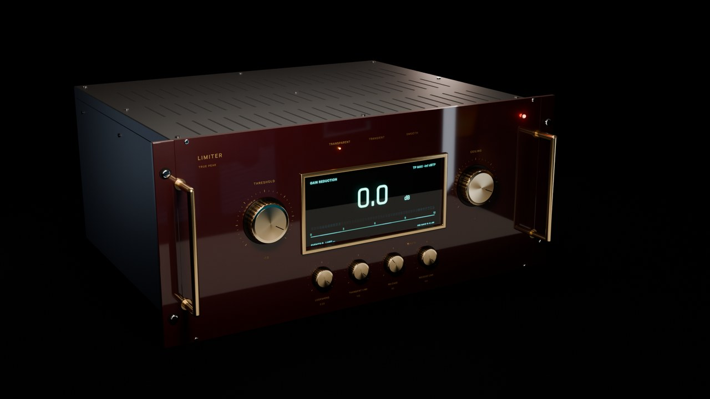
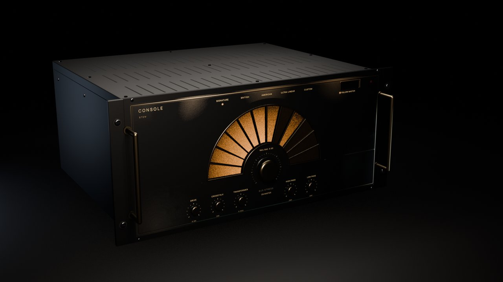
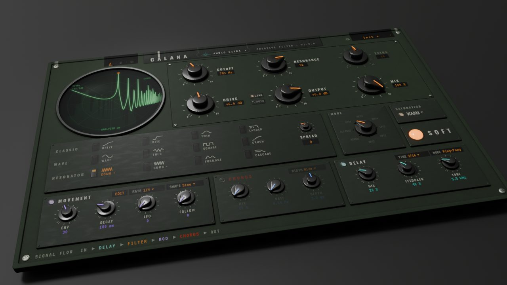
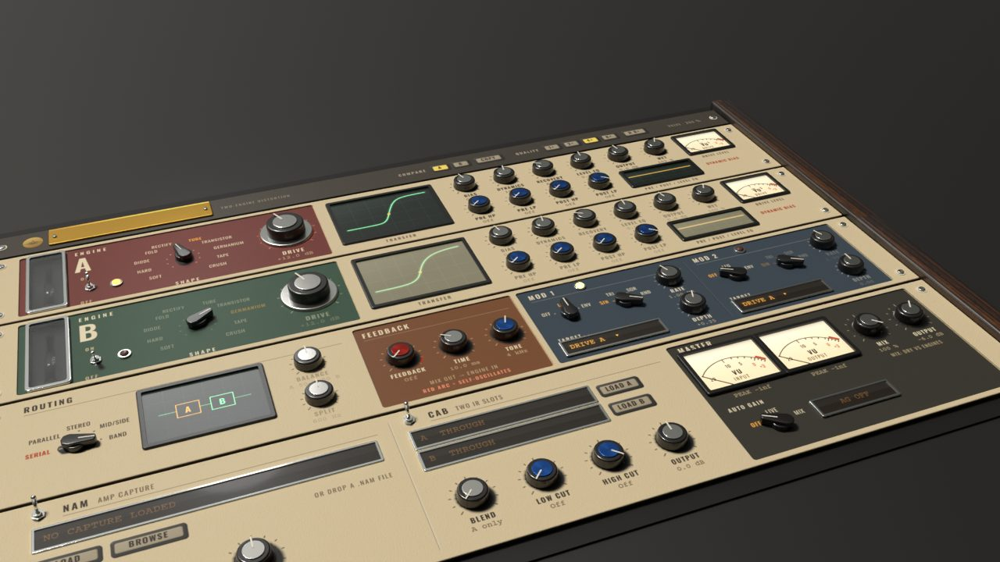
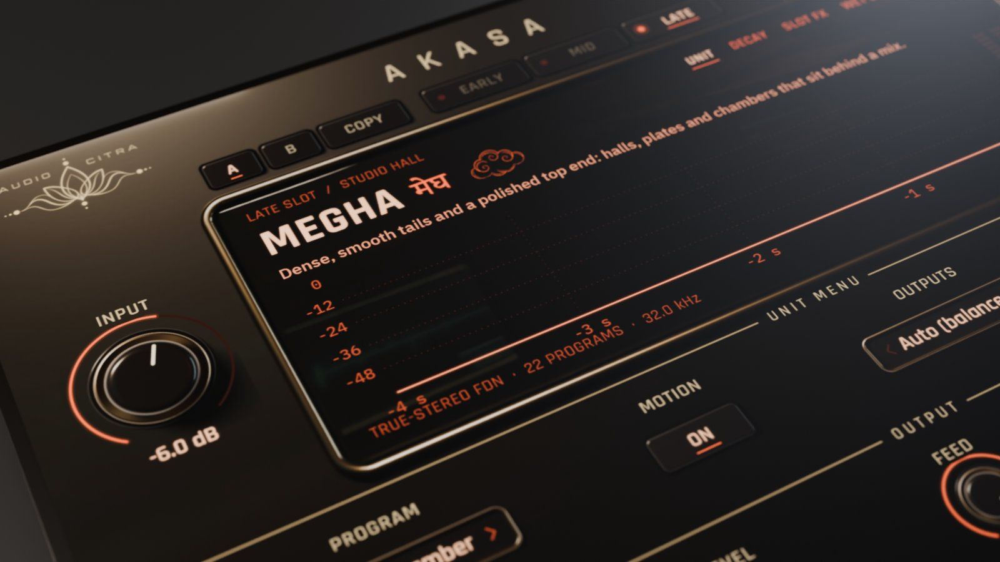
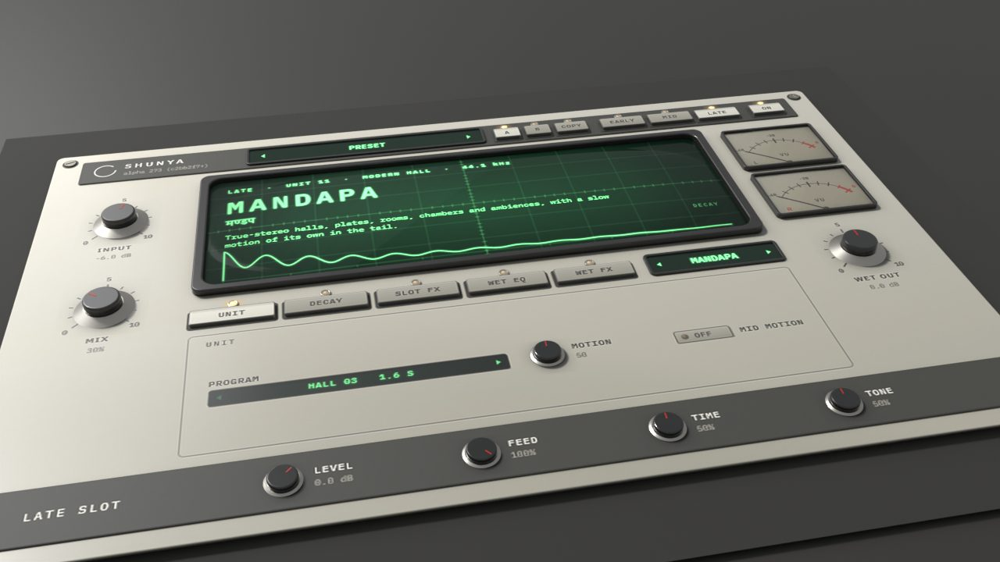
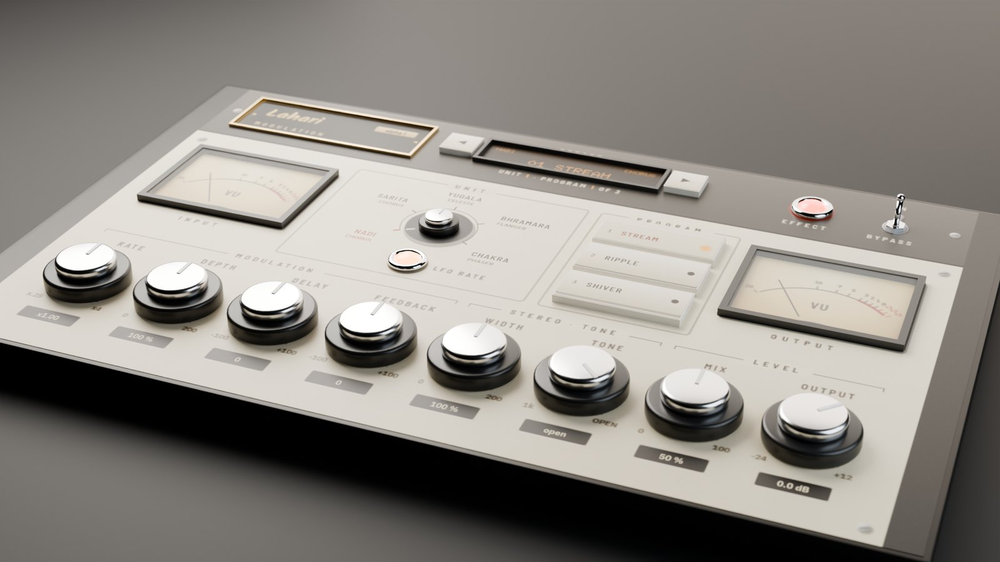
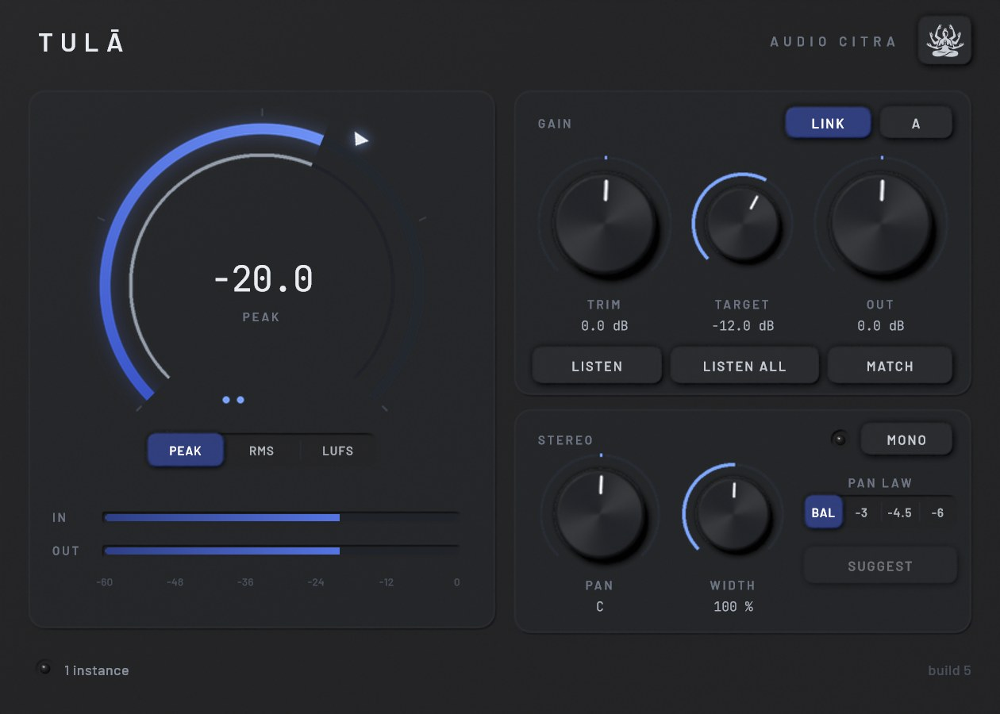

Entrance hall · Free admission · Open daily
My little museum
of plug-ins.
Hey, welcome in. Pull up a chair.
There are seven rooms in here: a channel strip, an effects box, a distortion, two reverbs, a modulation box and a mix utility. A lot of what they do is fitted to stuff I analyzed myself, and I built every one of them to feel good under your hands. All VST3, all Windows.
Each room has its object on the wall, the notes on how it was made, and an audio guide so you can hear it for yourself.

On the wall this month · Spanda Limiter · Noir skin · Room 01
Floor plan
7 rooms · 3 open · 4 opening soon
- 01
Spanda
Channel strip. Seven modules in one strip, and parts you can mix and match.

- 02
Gālana
Effects box. Twelve filters, Movement, chorus and delay, in any of six orders. Opening soon.

- 03
Agni
Distortion. Two engines, ten shapes, eight pedal models. Opening soon.

- 04
Ākāśa
Coloured reverb. Six reverbs fitted to the decay and colour of classic digital units.

- 05
Shunya
Transparent reverb. No saturation, no drive, no grain. Just space. Opening soon.

- 06
Lahari
Modulation. Chorus, ensemble, celeste, flanger and phaser. Opening soon.

- 07
Tulā
Mix utility. Gain staging, level matching and pan for every track.

Every plot here I analyzed from the actual plug-in, with the settings printed right next to it. No tricks.. you hear what it does.
House rule · Curator's note